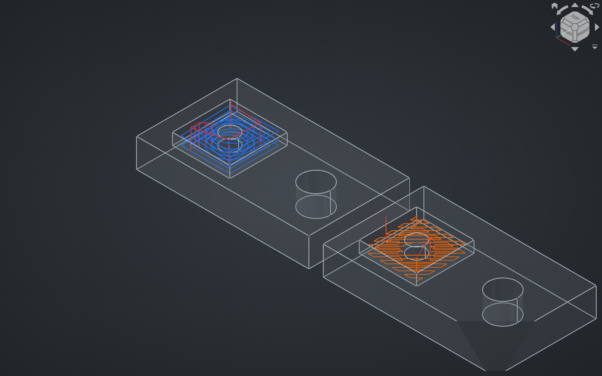
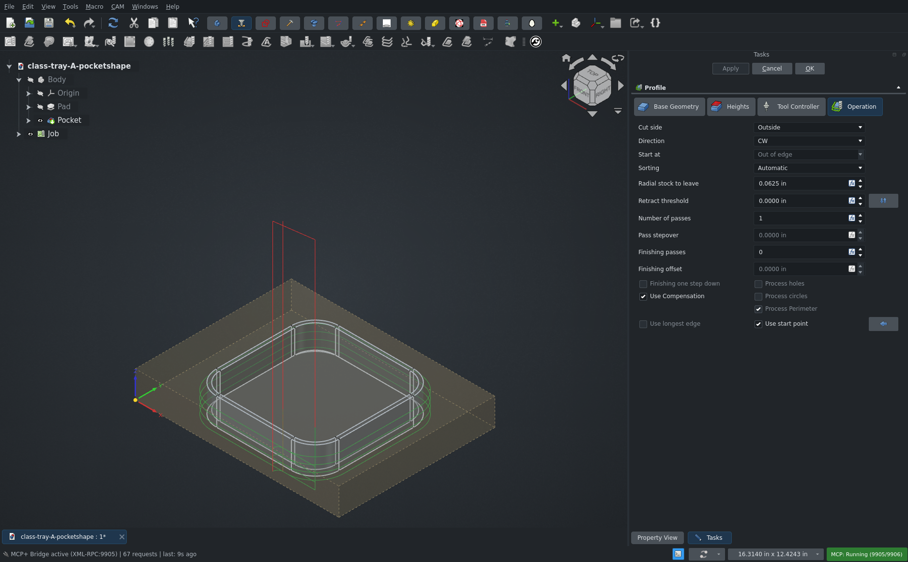
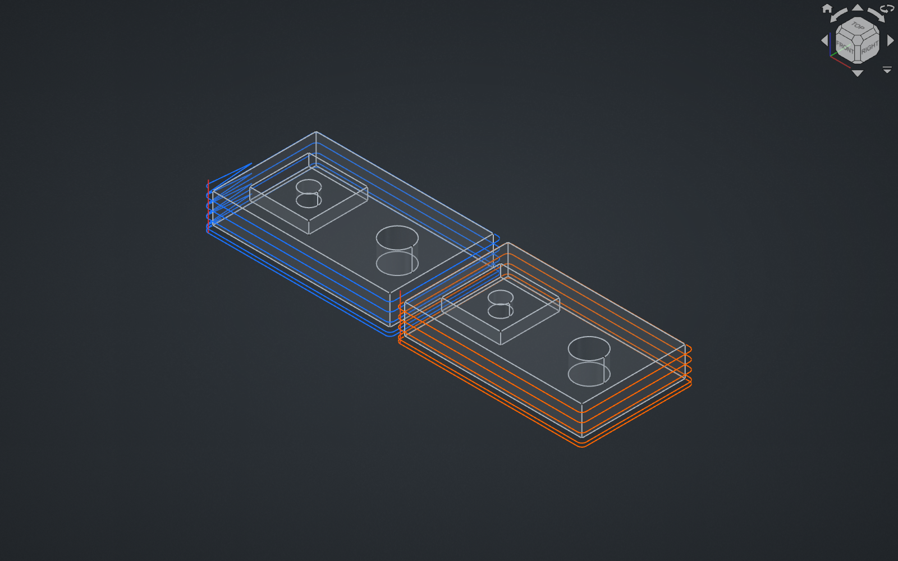
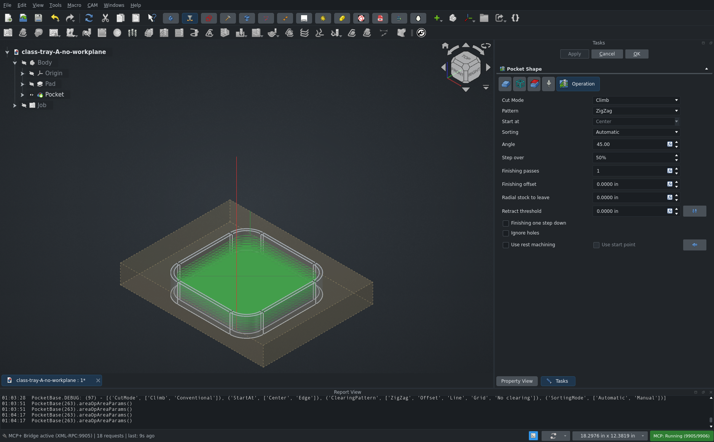
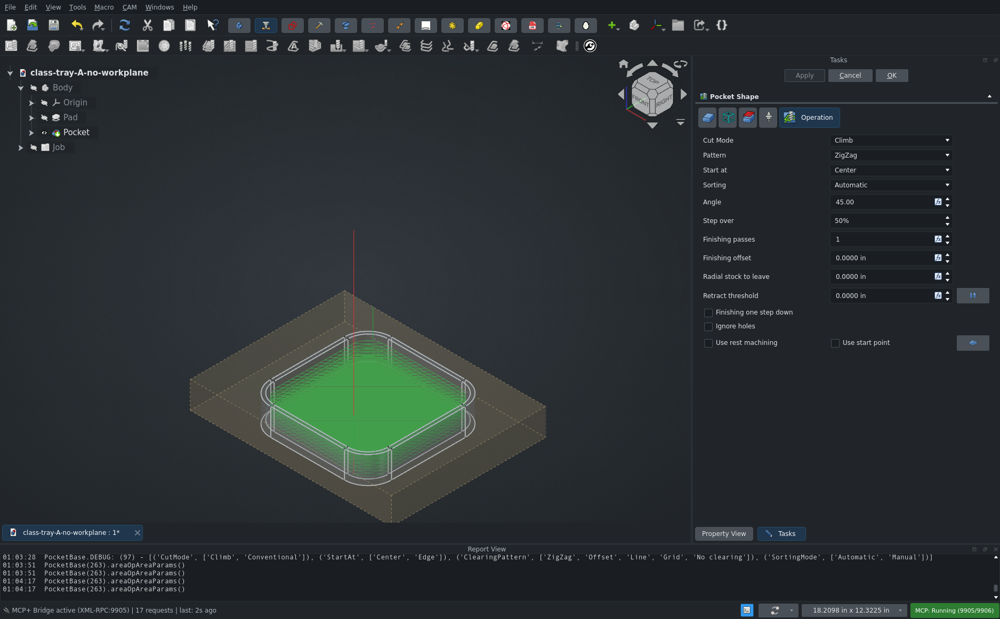

CAM: Profile & PocketShape updated Task panels
Review 2
Requested by @Connor9220
Re-review: Billy (Connor9220) commented 10-25 on RampEntry removed from Profile and Helix still shown in PocketShape. Check what tarman3 changed since and whether those points are resolved. Earlier runs found: a saved Pocket with the Helix pattern silently becomes ZigZag on load; old Profile ops keep RampMethod/RampAngle properties; the Pocket panel's updateVisibility may not run on open (verify). Use pocket-island-variants headless only (cam_ab) for the migration checks. Do the GUI checks on cl
CAM unit tests with the PR applied: Ran 2094 tests · OK (skipped=13, expected failures=4)







PR #33100 review: CAM: Profile & PocketShape updated Task panels
Note: the requester notes were cut off at the end ("Do the GUI checks on cl"). I read that as "on class-tray" and did the GUI checks there.
TL;DR
- Minor: the Profile panel needs Qt 6.7 or newer. The PR removed the fallback for older Qt, so building against an older system Qt (Ubuntu 24.04 or Debian 12 packages, Qt 6.4) breaks the panel. Release builds (Qt 6.8.3 in 1.1, 6.11 on main) and CI (KDE Neon Qt) are not affected.
- The Pocket panel shows the wrong fields enabled when it opens. For example, Start at stays enabled on a ZigZag pocket until you change the pattern.
Billy's 10-25 points: Profile ramp entry is still removed, not hidden behind an experimental switch. The author declined to add one and pushed "remove ramp" (6c43fc6d, 10-25 08:17), which also removes the Helix pattern and Finishing Ramp Helix from Pocket Shape. So "Helix still shown" is fixed by removal. Nothing has been pushed since. The removal is intentional for 26.3 and is not reported as a defect.
What was reviewed
- Head 6c43fc6d (2 commits), cherry-picked onto upstream main 24ea8589aa8 and built in review3.
- Unit tests:
TestCAMAppran 2094 tests: OK (13 skipped, 4 expected failures). The PR adds and changes no tests. - A/B, headless (
cam_ab, main 24ea8589aa8 vs PR) onpocket-island-variants.FCStd, 26 operations: properties after load, and paths after touch + recompute. - GUI on
class-tray-A-no-workplane.FCStd: the Profile panel on the existing Profile op, and a new Pocket Shape on the tray pocket floor, created throughCAM_Pocket_Shape.
Findings
1. Minor: Profile task panel needs Qt >= 6.7
Path/Op/Gui/Profile.py getSignalsForUpdate() now always uses QCheckBox.checkStateChanged. That signal was added in Qt 6.7. Main had a hasattr(..., "checkStateChanged") check with a stateChanged fallback ("Qt version < 6.7.0"), and the PR deletes it. The same check is still used in Waterline, RotarySurface and Flute.
FreeCAD requires only Qt 6 and does not set a minimum minor version. Release builds use Qt 6.8.3 (1.1) and 6.11 (main), and the Ubuntu CI installs Qt from KDE Neon, so none of those are affected. Building against an older system Qt is: Ubuntu 24.04 and Debian 12 ship Qt 6.4, where self.form.useCompensation.checkStateChanged raises AttributeError while the panel is set up.
Not reproduced at runtime: this machine's pixi build uses Qt 6.11. The finding comes from the code and from Qt's documentation ("introduced in Qt 6.7").
Repro: build against the system Qt 6.4 (Ubuntu 24.04 packages), open any Profile op, then double-click it.
Fix: keep the hasattr / stateChanged fallback, as before.
2. Pocket panel: enable states are not set when the panel opens
PocketBase.TaskPanelOpPage.updateVisibility() is only connected to the pattern, finishing-passes and start-at signals. It is not called from setFields() or on open. Profile's new updateData() is fine: verified, its states are correct on open.
Verified in the GUI (class tray, Pocket Shape with ZigZag, Start at = Center, Finishing passes 1). On open, Start at and Use start point are enabled. Calling the page's own updateVisibility() grays both out. Live changes work: Offset → Start at enabled and Angle disabled; Finishing passes 0 → Finishing offset and One step down disabled; Start at = Edge → Use start point enabled. A new Offset pocket happens to look right on open only because loading the combo fires the signal.
Repro:
- Pocket Shape, Pattern = ZigZag, Start at = Center. OK.
- Double-click it.
- Start at and Use start point are editable.
- Switch the pattern to Offset and back to ZigZag: now they are grayed.
Fix: call self.updateVisibility() at the end of setFields().
Checked, fine
- Default settings: every op without ramp/helix settings gives an identical path on main and on the PR (commands, feed length, Z levels): all Pocket patterns, finishing passes/offset/one step down, Profile multi-pass, StartAt Edge, and MillFace.
- The Profile StartAt "OutOfEdge" → "Out of edge" migration works on all 9 saved Profile ops, and their paths are unchanged.
- Profile panel: new fields exist, write to the op, and are enabled correctly on open (Start at/Pass stepover need passes > 1; Finishing offset/One step down need finishing passes; Use longest edge is off when Use start point is on; the Process holes/circles/perimeter checkboxes are grayed out without faces).
- Pocket panel: Helix is gone from the Pattern list; tooltips come from the property descriptions.
Removed ramp and helix entry (intentional for 26.3, not a defect)
Ramp entry, the Helix pocket pattern and Finishing Ramp Helix are removed on purpose for 26.3. For reference: a saved Helix pocket loads as ZigZag, saved ramped Profiles now plunge, and RampMethod, RampAngle and FinishingRampHelix stay on old ops unused.
Not in the PR description
- Pocket "Helix" clearing pattern removed; saved Helix pockets load as ZigZag (tested; intentional for 26.3)
- Pocket "Finishing Ramp Helix" removed from new ops; old ops keep it, visible and ignored (tested; intentional for 26.3)
- Profile "Ramp Method"/"Ramp Angle" stay on old ops, visible and ignored; ramps become plunges without a warning (tested; intentional for 26.3)
- Profile Start At value renamed "OutOfEdge" → "Out of edge", a file-format change with a migration (tested, works; job templates and setup sheets that store "OutOfEdge" not tested)
- New Pocket panel widgets: Start at, Sorting, Finishing passes, Finishing offset, Finishing one step down (tested)
- New Profile panel widgets: Start at, Sorting, Finishing passes, Finishing offset, Finishing one step down, Use longest edge (tested)
- Profile Process holes/circles/perimeter are now grayed out instead of hidden when no face is selected (tested)
- Profile panel drops the Qt < 6.7 signal fallback (not tested at runtime, finding 1)
- Changed descriptions for Process holes/perimeter/circles; old documents keep the old tooltip text (tested, cosmetic)
- MillFace panel gains Start at and Sorting combos (not tested)
- Pocket Angle field is now a unit spin box bound to the property, so it supports expressions (not tested)
setToolTipsnow silently skips widgets or properties that do not exist (not tested)
Media
demo.mp4: Pocket panel open-state issue, step by step.pocket_panel_on_open.png/pocket_panel_expected.png: the panel just opened, and afterupdateVisibility().helix_pocket_main_vs_pr.png,profile_ramp_main_vs_pr.png: main (blue) vs PR (orange) paths from the headless A/B, loaded into FreeCAD for the pictures.profile_panel_pr.png: the new Profile panel.
Review 1
Draft: not posted to the pr yet
This review is waiting for approval. The comment below is what would be posted.
TL;DR
- The Profile panel now needs Qt 6.7+. On Ubuntu 24.04 builds (Qt 6.4) it won't open.
- The Pocket panel opens with the wrong fields enabled.
Profile panel breaks on Qt < 6.7
The stateChanged fallback was removed, so checkStateChanged raises AttributeError on Qt 6.4.
- Build with Ubuntu 24.04 Qt.
- Open a Profile op.
Pocket panel enable states not set on open
updateVisibility() only runs when a field changes. Calling it from setFields() would fix this.
- Pocket Shape, ZigZag, Start at = Center.
- Open its panel: Start at and Use start point are enabled.
Not in the PR description
- Ramp entry, Pocket Helix pattern and FinishingRampHelix removed (intentional for 26.3); old ops keep the ramp properties (tested)
- StartAt "OutOfEdge" renamed to "Out of edge", migrates fine (tested)
- New Pocket and Profile panel fields (tested)
- Process holes/circles/perimeter grayed out instead of hidden (tested)
- Qt < 6.7 fallback dropped (not tested)
- MillFace panel gets Start at/Sorting (not tested)
Requested by @Connor9220
Re-review: Billy (Connor9220) commented 10-25 on RampEntry removed from Profile and Helix still shown in PocketShape. Check what tarman3 changed since and whether those points are resolved. Earlier runs found: a saved Pocket with the Helix pattern silently becomes ZigZag on load; old Profile ops keep RampMethod/RampAngle properties; the Pocket panel's updateVisibility may not run on open (verify). Use pocket-island-variants headless only (cam_ab) for the migration checks. Do the GUI checks on cl
CAM unit tests with the PR applied: Ran 2094 tests · OK (skipped=13, expected failures=4)







PR #33100 review: CAM: Profile & PocketShape updated Task panels
Note: the requester notes were cut off at the end ("Do the GUI checks on cl"). I read that as "on class-tray" and did the GUI checks there.
TL;DR
- The Profile panel needs Qt 6.7 or newer. The PR removed the fallback for older Qt. FreeCAD's Ubuntu 24.04 builds use Qt 6.4, and there the Profile task panel will fail to open.
- The Pocket panel shows the wrong fields enabled when it opens. For example, Start at stays enabled on a ZigZag pocket until you change the pattern.
Billy's 10-25 points: Profile ramp entry is still removed, not hidden behind an experimental switch. The author declined to add one and pushed "remove ramp" (6c43fc6d, 10-25 08:17), which also removes the Helix pattern and Finishing Ramp Helix from Pocket Shape. So "Helix still shown" is fixed by removal. Nothing has been pushed since. The removal is intentional for 26.3 and is not reported as a defect.
What was reviewed
- Head 6c43fc6d (2 commits), cherry-picked onto upstream main 24ea8589aa8 and built in review3.
- Unit tests:
TestCAMAppran 2094 tests: OK (13 skipped, 4 expected failures). The PR adds and changes no tests. - A/B, headless (
cam_ab, main 24ea8589aa8 vs PR) onpocket-island-variants.FCStd, 26 operations: properties after load, and paths after touch + recompute. - GUI on
class-tray-A-no-workplane.FCStd: the Profile panel on the existing Profile op, and a new Pocket Shape on the tray pocket floor, created throughCAM_Pocket_Shape.
Findings
1. Profile task panel needs Qt >= 6.7
Path/Op/Gui/Profile.py getSignalsForUpdate() now always uses QCheckBox.checkStateChanged. That signal was added in Qt 6.7. Main had a hasattr(..., "checkStateChanged") check with a stateChanged fallback ("Qt version < 6.7.0"), and the PR deletes it. The same check is still used in Waterline, RotarySurface and Flute.
FreeCAD requires only Qt 6 and does not set a minimum minor version. .github/workflows/sub_buildUbuntu.yml runs on ubuntu-24.04 with the apt qt6-base-dev, which is Qt 6.4.2. Debian 12 is also 6.4. On those builds, self.form.useCompensation.checkStateChanged raises AttributeError while the panel is set up, so the Profile panel cannot be opened or edited. CI does not open task panels, so it will not catch this.
Not reproduced at runtime: this machine's pixi build uses Qt 6.11. The finding comes from the code and from Qt's documentation ("introduced in Qt 6.7").
Repro: build against Qt 6.4 (Ubuntu 24.04 packages), open any Profile op, then double-click it.
Fix: keep the hasattr / stateChanged fallback, as before.
2. Pocket panel: enable states are not set when the panel opens
PocketBase.TaskPanelOpPage.updateVisibility() is only connected to the pattern, finishing-passes and start-at signals. It is not called from setFields() or on open. Profile's new updateData() is fine: verified, its states are correct on open.
Verified in the GUI (class tray, Pocket Shape with ZigZag, Start at = Center, Finishing passes 1). On open, Start at and Use start point are enabled. Calling the page's own updateVisibility() grays both out. Live changes work: Offset → Start at enabled and Angle disabled; Finishing passes 0 → Finishing offset and One step down disabled; Start at = Edge → Use start point enabled. A new Offset pocket happens to look right on open only because loading the combo fires the signal.
Repro:
- Pocket Shape, Pattern = ZigZag, Start at = Center. OK.
- Double-click it.
- Start at and Use start point are editable.
- Switch the pattern to Offset and back to ZigZag: now they are grayed.
Fix: call self.updateVisibility() at the end of setFields().
Checked, fine
- Default settings: every op without ramp/helix settings gives an identical path on main and on the PR (commands, feed length, Z levels): all Pocket patterns, finishing passes/offset/one step down, Profile multi-pass, StartAt Edge, and MillFace.
- The Profile StartAt "OutOfEdge" → "Out of edge" migration works on all 9 saved Profile ops, and their paths are unchanged.
- Profile panel: new fields exist, write to the op, and are enabled correctly on open (Start at/Pass stepover need passes > 1; Finishing offset/One step down need finishing passes; Use longest edge is off when Use start point is on; the Process holes/circles/perimeter checkboxes are grayed out without faces).
- Pocket panel: Helix is gone from the Pattern list; tooltips come from the property descriptions.
Removed ramp and helix entry (intentional for 26.3, not a defect)
Ramp entry, the Helix pocket pattern and Finishing Ramp Helix are removed on purpose for 26.3. For reference: a saved Helix pocket loads as ZigZag, saved ramped Profiles now plunge, and RampMethod, RampAngle and FinishingRampHelix stay on old ops unused.
Not in the PR description
- Pocket "Helix" clearing pattern removed; saved Helix pockets load as ZigZag (tested; intentional for 26.3)
- Pocket "Finishing Ramp Helix" removed from new ops; old ops keep it, visible and ignored (tested; intentional for 26.3)
- Profile "Ramp Method"/"Ramp Angle" stay on old ops, visible and ignored; ramps become plunges without a warning (tested; intentional for 26.3)
- Profile Start At value renamed "OutOfEdge" → "Out of edge", a file-format change with a migration (tested, works; job templates and setup sheets that store "OutOfEdge" not tested)
- New Pocket panel widgets: Start at, Sorting, Finishing passes, Finishing offset, Finishing one step down (tested)
- New Profile panel widgets: Start at, Sorting, Finishing passes, Finishing offset, Finishing one step down, Use longest edge (tested)
- Profile Process holes/circles/perimeter are now grayed out instead of hidden when no face is selected (tested)
- Profile panel drops the Qt < 6.7 signal fallback (not tested at runtime, finding 1)
- Changed descriptions for Process holes/perimeter/circles; old documents keep the old tooltip text (tested, cosmetic)
- MillFace panel gains Start at and Sorting combos (not tested)
- Pocket Angle field is now a unit spin box bound to the property, so it supports expressions (not tested)
setToolTipsnow silently skips widgets or properties that do not exist (not tested)
Media
demo.mp4: Pocket panel open-state issue, step by step.pocket_panel_on_open.png/pocket_panel_expected.png: the panel just opened, and afterupdateVisibility().helix_pocket_main_vs_pr.png,profile_ramp_main_vs_pr.png: main (blue) vs PR (orange) paths from the headless A/B, loaded into FreeCAD for the pictures.profile_panel_pr.png: the new Profile panel.